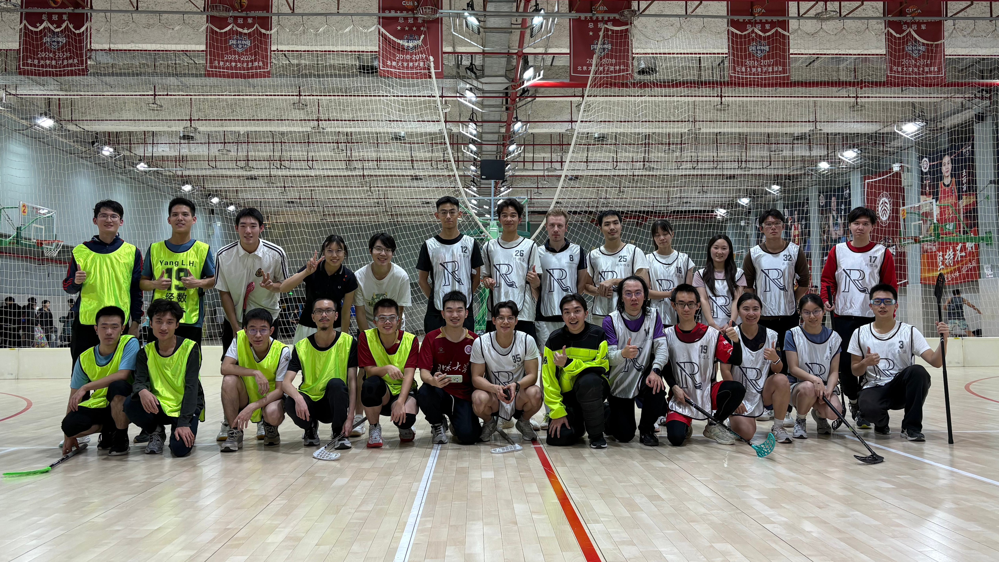

<main>
    <article class="article-container">
        
        <header class="article-header">
            <h1>排位赛第一轮 | 元社联队4：2战胜经数联队</h1>
            <div class="article-meta">
                <span>作者：xhh</span> | <span>发布于：2025年11月10日</span>
            </div>
        </header>

        <section class="article-body">
            <h2>第一节</h2>
            <p>第三分钟，<strong>周国龙</strong>左路突破后横传右路的<strong>Oswald</strong>，后者抓住机会破门得分，元社联队1：0领先。</p>
            
            <h2>第二节</h2>
            <p>第五分钟，<strong>王业成</strong>在前场抢断元社联队门后的横传后随即传中，<strong>王品澄</strong>门前抢点破门，双方战成1：1平。</p>
            <p>双方在中场争球，<storng>王品澄</storng>赢得球权，<strong>王俣涵</strong>后场得球后直接远射攻门，帮助经数联队反超比分。</p>
            
            <h2>第三节</h2>
            <p>第三分钟，<strong>Oswald</strong>后场抢断后带球推进，面对着两个人的防守攻入球门上角，双方再次战平。</p>
            <p>第十一分钟，<strong>崔香</strong>前场抢断后直接攻门，球飞入球门近角，元社联队在比赛即将结束时再次超出比分，3：2领先。</p>
            <p>比赛临近终场结束时，<strong>Oswald</strong>后场持球推进，转身摆脱防守后破门得分，帮助元社联队杀死了比赛。</p>

            <a href="images/w4-2.png" title="元社联队对阵经数联队" class="image-link">
                <figure class="featured-image">
                    
                </figure>
            </a>

            <h2>赛程预告</h2>
            <p>本周将进行排位赛第二轮，对阵双方分别为胜者组的败者<strong>一地花生</strong>以及败者组的胜者<strong>元社联队</strong>，双方将争夺最后一张决赛的门票。</p>

        </section>

        <footer class="article-footer">
            <a href="{{'/htmls/3-association/2-rk-cup/25-rk-cup/main.html' | relative_url}}" class="btn-home">返回赛事主页</a>
        </footer>
    </article>
</main>